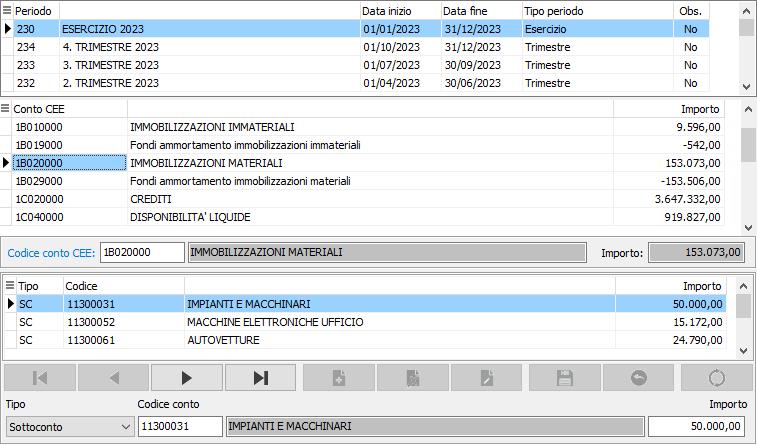

Manutenzione bilancio
Il programma accede alla tabella Valori IV Direttiva CEE consentendo il caricamento di importi oppure la modifica di importi esistenti. Viene utilizzato generalmente in occasione del primo anno di utilizzo di OS1 per inserire manualmente i valori del Bilancio IV Direttiva dell’esercizio precedente, gestito con un'altra applicazione, al fine di consentire la stampa di raffronto.
È invece del tutto sconsigliabile la variazione, pur possibile, dei valori calcolati automaticamente dal programma di elaborazione in base alle scritture contabili esistenti su OS1: un’eventuale variazione manuale verrebbe persa al momento di una successiva rielaborazione.
Accedendo al programma, appare la seguente finestra video:

In alto è presente una griglia che riporta i periodi presenti nella tabella Periodi bilanci e scorrendo i record mostrerà i sottoconti CEE con i relativi valori.
Una griglia centrale che riporta il sottoconto CEE ed il relativo importo elaborato ed il relativo importo; in caso di variazione di valori già elaborati, è sufficiente agire nel campo “importo”. In caso di caricamento il conto CEE e l'importo saranno associati al periodo su cui si è posizionati. La ricerca in browse sul codice sottoconto CEE richiederà il periodo per portarsi direttamente sui dati collegati.
Una griglia in basso dove, se elaborato, è presente il dettaglio dei sottoconti del piano dei conti aziendale associati al sottoconto CEE; di norma questa sezione, come la precedente è il risultato dell'elaborazione bilancio, ma è comunque possibile aggiungere, modificare o cancellare i valori presenti.